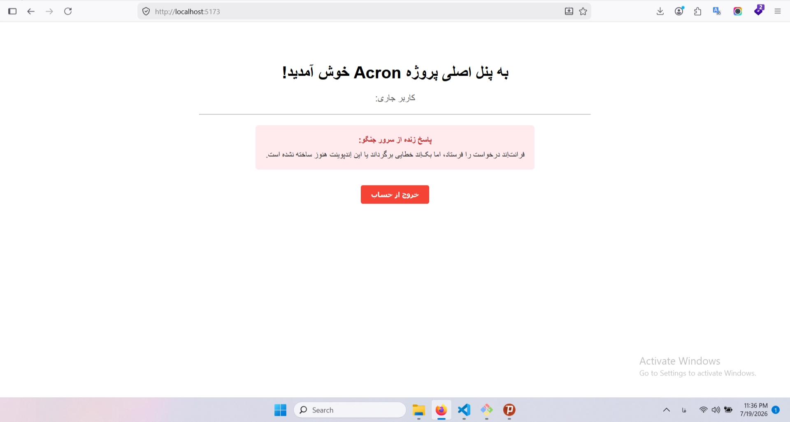
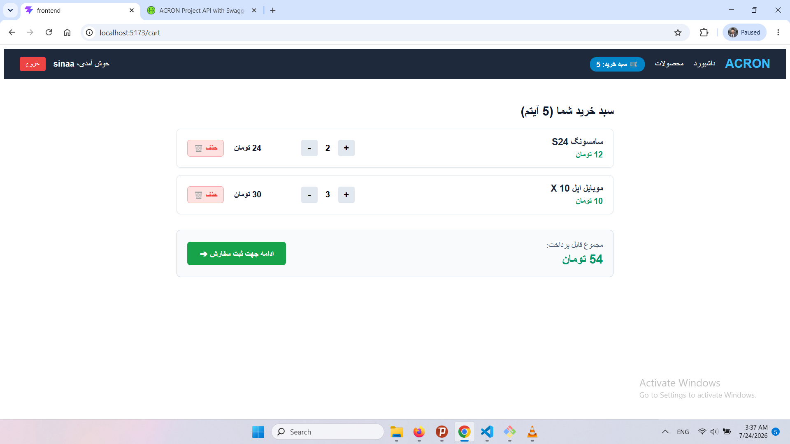

ACRON Methodology Part-14
فاز 11: Frontend - Presentation Layer
شروع قدم 23
فایل src/App.jsx را باز کنید. میخواهیم بخش کامپوننت Dashboard (که در خطوط بالایی فایل قرار دارد) را ارتقا دهیم تا بتواند دیتا را از جنگو بگیرد و نمایش دهد.
23- کدهای داخل فایلsrc/App.jsxرا با این نسخه کاملتر جایگزین کنید:import React, { useContext, useState, useEffect } from 'react'; import { BrowserRouter as Router, Routes, Route, Navigate } from 'react-router-dom'; import { AuthContext } from './context/AuthContext'; import axiosInstance from './api/axiosInstance'; // وارد کردن نمونه اکسپوس خودمان import Login from './components/Login'; import ProtectedRoute from './components/ProtectedRoute'; // پنل اصلی پروژه Acron (با قابلیت دریافت دیتا از سرور) function Dashboard() { const { user, logout } = useContext(AuthContext); const [serverMessage, setServerMessage] = useState('در حال بارگذاری اطلاعات از جنگو...'); const [error, setError] = useState(''); useEffect(() => { // ۱. ارسال درخواست به یک اِندپوینت دلخواه در جنگو که نیاز به لاگین دارد. // نکته: آدرس زیر را میتوانید به هر کدام از اِندپوینتهای محافظتشده جنگوی خود تغییر دهید (مثلاً 'profile/' یا 'dashboard/') axiosInstance.get('dashboard/') .then((response) => { // اگر سرور پاسخ داد، دیتا را در استیت ذخیره میکنیم // فرض میکنیم جنگو یک فیلد به نام message یا شبیه آن پس میفرستد setServerMessage(response.data.message || 'اطلاعات با موفقیت دریافت شد اما فیلد message یافت نشد.'); }) .catch((err) => { console.error("API Call Error:", err); setError('فرانتاِند درخواست را فرستاد، اما بکاِند خطایی برگرداند یا این اِندپوینت هنوز ساخته نشده است.'); }); }, []); return ( <div style={{ textAlign: 'center', marginTop: '80px', fontFamily: 'sans-serif', direction: 'rtl' }}> <h1>به پنل اصلی پروژه Acron خوش آمدید!</h1> <p style={{ color: '#555', fontSize: '18px' }}>کاربر جاری: <strong>{user?.username}</strong></p> <hr style={{ width: '50%', margin: '20px auto', borderColor: '#eee' }} /> {/* نمایش پیام دریافتی از جنگو */} <div style={{ padding: '20px', backgroundColor: error ? '#ffebee' : '#e8f5e9', display: 'inline-block', borderRadius: '6px', minWidth: '300px' }}> <h4 style={{ margin: '0 0 10px 0', color: error ? '#c62828' : '#2e7d32' }}>پاسخ زنده از سرور جنگو:</h4> <p style={{ margin: 0, color: '#333' }}>{error ? error : serverMessage}</p> </div> <br /> <button onClick={logout} style={{ padding: '10px 20px', backgroundColor: '#f44336', color: 'white', border: 'none', borderRadius: '4px', cursor: 'pointer', marginTop: '30px', fontWeight: 'bold' }} > خروج از حساب </button> </div> ); } function App() { const { user } = useContext(AuthContext); return ( <Router> <Routes> <Route path="/login" element={user ? <Navigate to="/" replace /> : <Login />} /> <Route path="/" element = { <ProtectedRoute> <Dashboard /> </ProtectedRoute> } /> <Route path="*" element={<Navigate to="/" replace />} /> </Routes> </Router> ); } export default App;
وقتی شما وارد برنامه میشوید و به صفحه داشبورد میرسید، ریآکت به صورت خودکار با دستور axiosInstance.get('dashboard/') به جنگو سیگنال میفرستد. از آنجا که ما از axiosInstance خودمان استفاده کردهایم، اینترسپتوری که قبلاً نوشتیم فعال میشود و بدون اینکه شما کار اضافهای کنید، توکن JWT را به هدر درخواست میچسباند.
فایل را ذخیره کنید و نتیجه را در مرورگر ببینید. با توجه به اینکه آیا اِندپوینتی به نام api/dashboard/ در سمت جنگو ساختهاید یا خیر، نتیجه را بررسی کنید.
{kind=link}

این وضعیت نشان میدهد که سیستم مدیریت خطای ریاکت شما دقیقاً همانطور که طراحی کرده بودیم عمل کرده است. فرانتاِند درخواست را همراه با توکن JWT به جنگو فرستاده، جنگو چون این مسیر را نداشته خطای 404 Not Found پس داده، و ریاکت بدون اینکه کرش کند یا به هم بریزد، خطا را گرفت و در آن باکس قرمز نمایش داد. یعنی لولهکشی شبکه کاملاً درست کار میکند.
برای اینکه این چرخه را کامل کنیم و طعم یک ارتباط ۱۰۰٪ واقعی را بچشید، بیایید این اِندپوینت را خیلی سریع در سمت جنگو بسازیم تا باکس قرمز شما به یک پیام سبز و زنده تبدیل شود.
حالا به سراغ فرانتاند میرویم. فایل src/App.jsx را باز کنید و کامپوننت Dashboard را طوری تغییر دهید که به جای درخواست دادن به مسیر فرضی dashboard/، به مسیر واقعی پروفایل کاربر درخواست بفرستد و اطلاعات دیتابیس را نمایش دهد:
24- این فایل را به این شکل تغییر دهید :src/App.jsxفقط تابع Dashboard را تغییر بدهید.function Dashboard() { const { user, logout } = useContext(AuthContext); const [profileData, setProfileData] = useState(null); const [error, setError] = useState(''); useEffect(() => { // ارسال درخواست به اِندپوینت واقعی پروفایل در جنگو axiosInstance.get('customers/profile/') .then((response) => { // ذخیره اطلاعات واقعی مشتری (مانند تلفن، کد ملی یا هر چه در سریالایزر هست) setProfileData(response.data); }) .catch((err) => { console.error("API Call Error:", err); setError('خطا در دریافت اطلاعات واقعی پروفایل از دیتابیس.'); }); }, []); return ( <div style={{ textAlign: 'center', marginTop: '80px', fontFamily: 'sans-serif', direction: 'rtl' }}> <h1>به پنل اصلی پروژه Acron خوش آمدید!</h1> <p style={{ color: '#555', fontSize: '18px' }}>کاربر جاری سیستم: <strong>{user?.username}</strong></p> <hr style={{ width: '50%', margin: '20px auto', borderColor: '#eee' }} /> <div style={{ padding: '20px', backgroundColor: error ? '#ffebee' : '#e8f5e9', display: 'inline-block', borderRadius: '6px', minWidth: '350px', textAlign: 'right' }}> <h4 style={{ margin: '0 0 10px 0', color: error ? '#c62828' : '#2e7d32', textAlign: 'center' }}> {error ? 'خطا در ارتباط' : 'مشخصات واقعی شما از دیتابیس جنگو:'} </h4> {error ? ( <p style={{ color: '#333', textAlign: 'center' }}>{error}</p> ) : profileData ? ( <pre style={{ direction: 'ltr', backgroundColor: '#fff', padding: '10px', borderRadius: '4px', overflowX: 'auto' }}> {JSON.stringify(profileData, null, 2)} </pre> ) : ( <p style={{ textAlign: 'center' }}>در حال بارگذاری اطلاعات...</p> )} </div> <br /> <button onClick={logout} style={{ padding: '10px 20px', backgroundColor: '#f44336', color: 'white', border: 'none', borderRadius: '4px', cursor: 'pointer', marginTop: '30px', fontWeight: 'bold' }} > خروج از حساب </button> </div> ); }
با این کار، به محض اینکه لاگین کنید، فرانتاند با توکنِ امنِ کاربر به کامپوننت ادغامشدهی جدید شما در جنگو (CustomerProfileView) متصل میشود. جنگو با متد get_or_create کاربر را در جدول مشتریان پیدا میکند (یا میسازد) و تمام اطلاعات ساختاریافتهی آن را به صورت یک شیء JSON به فرانتاند برمیگرداند تا روی صفحه چاپ شود. این یعنی دیتای واقعی و زنده دیتابیس، جایگزین پیام تستی قبلی میشود.
25- در ترمینال خود، مطمئن شوید که داخل پوشهfrontend/هستید و دستور زیر را تایپ کنید:npm run devدر مسیر
backend/هم دستور زیر را بنویسید:python manage.py runserver
برای اینکه فرانتاند کاملاً به بکاند متصل بشه و یک وباپلیکیشن کامل داشته باشیم، توسعه فرانتاند را به صورت گامبهگام و بدون پیچیدگی پیش میبریم:
- گام اول: زیرساخت ارتباطی و مدیریت ورود (
AuthContext+Axios Interceptor)
تنظیم Axios Interceptor: تنظیم سرویس api.js برای ارسال خودکار توکن Access JWT در هدر درخواستها و دریافت خودکار توکن جدید با Refresh Token در صورت انقضا.
ساخت AuthContext: ساخت یک Context کلی در React برای نگهداری وضعیت لاگین بودن کاربر، اطلاعات پروفایل، و متدهای login و logout.
- گام دوم: مسیریابی و حفاظت از مسیرها (
React Router)
تعریف مسیرهای اصلی (/login, /register, /dashboard, /products).
ساخت کامپوننت ProtectedRoute برای جلوگیری از دسترسی کاربران غیرمجاز به صفحات شخصی (مثل سفارشات و پروفایل).
- گام سوم: ویجت مشاور هوشمند ACRON (
AdvisorChat Component)
ساخت کامپوننت چت برای اتصال به بخش apps/advisor بکاند.
این بخش یک رابط کاربرپسند ایجاد میکند تا هر بازدیدکنندهای بتواند با مشاور هوشمند پروژه چت کند و سوالاتش را بپرسد.
- گام چهارم: فروشگاه، محصولات و سبد خرید
صفحه کاتالوگ محصولات (/products): دریافت و نمایش لیست محصولات و دستهبندیها از بکاند.
سبد خرید (/cart): اتصال فرانتاند به API سبد خرید (که با UUID کار میکند) و انتقال به مرحله ثبت سفارش.
در این فایل یک نمونه اختصاصی از کتابخانه Axios میسازیم. وظیفه این فایل چسباندن خودکار توکنهای JWT به تمام درخواستها و مدیریت تمدید خودکار توکنهای منقضیشده است.
- 📚 آموزش مفاهیم این بخش (حداقل دو خط برای هر قسمت):
- مفهوم Axios Instance (
axios.create):
در جاوااسکریپت به جای اینکه در تمام فایلها آدرس کامل بکاند ([http://127.0.0.1:8000/api/](http://127.0.0.1:8000/api/)...) را تکرار کنیم، یک نسخه مرکزیتیافته از آکسیوس میسازیم. این کار باعث میشود اگر در آینده آدرس دامنه یا هدرهای پیشفرض تغییر کرد، فقط همین یک فایل را ویرایش کنیم و کل برنامه بهروزرسانی شود.
- مفهوم Request Interceptor (شنودکننده درخواستها):
اینترسپتور درخواست مثل یک دروازه بازرسی قبل از خروج هر درخواست HTTP عمل میکند. این تابع قبل از ارسال هر پیام به سمت بکاند جنگو، توکن دسترسی (access_token) را از حافظه مرورگر (localStorage) میخواند و آن را در هدر استانداردAuthorizationقرار میدهد تا بکاند هویت ما را تشخیص دهد.
- مفهوم Response Interceptor و تمدید خودکار توکن (Refresh Token Flow):
زمانی که توکن کوتاهمدت دسترسی منقضی میشود، بکاند خطای401 Unauthorizedبرمیگرداند. این اینترسپتور خطا را شکار کرده، بهصورت کاملاً مخفیانه و بدون اینکه کاربر متوجه شود یک درخواست به API رفرش توکن میفرستد، توکن جدید میگیرد، آن را ذخیره کرده و درخواست قبلی کاربر را دوباره تکرار میکند.
26- 💻 کد فایلsrc/api/api.js:import axios from 'axios'; // ساخت نمونه مرکزی اکسپوس const axiosInstance = axios.create({ baseURL: 'http://127.0.0.1:8000/api/', headers: { 'Content-Type': 'application/json', }, }); // Request Interceptor: تزریق توکن به تمام درخواستها axiosInstance.interceptors.request.use( (config) => { const accessToken = localStorage.getItem('access_token'); if (accessToken) { config.headers.Authorization = `Bearer ${accessToken}`; } return config; }, (error) => Promise.reject(error) ); // Response Interceptor: تمدید توکن در صورت دریافت خطای 401 axiosInstance.interceptors.response.use( (response) => response, async (error) => { const originalRequest = error.config; if (error.response?.status === 401 && !originalRequest._retry) { originalRequest._retry = true; try { const refreshToken = localStorage.getItem('refresh_token'); if (!refreshToken) throw new Error('توکن رفرش وجود ندارد'); // آدرس تمدید توکن جنگو const response = await axios.post('http://127.0.0.1:8000/api/accounts/token/refresh/', { refresh: refreshToken, }); const newAccessToken = response.data.access; localStorage.setItem('access_token', newAccessToken); originalRequest.headers.Authorization = `Bearer ${newAccessToken}`; return axiosInstance(originalRequest); } catch (refreshError) { localStorage.removeItem('access_token'); localStorage.removeItem('refresh_token'); window.location.href = '/login'; return Promise.reject(refreshError); } } return Promise.reject(error); } ); export default axiosInstance;
در سیستمهای مدرن ریکت، اطلاعاتی مثل "کاربر کیست" و "آیا لاگین کرده است یا نه" باید در تمام صفحات در دسترس باشد.
- 📚 آموزش مفاهیم این بخش (حداقل دو خط برای هر قسمت):
- مفهوم React Context (
createContext):
در ریکت بهطور عادی برای فرستادن اطلاعات از یک کامپوننت پدر به فرزند باید متغیرها را دانه به دانه (Prop Drilling) پاس بدهیم که پروژه را شلوغ میکند. با Context یک حافظه اختصاصی در سطح کل برنامه میسازیم تا تمام صفحات (مثل هدر، داشبورد، سبد خرید) مستقیماً به وضعیت احراز هویت دسترسی داشته باشند.
- مفهوم React Hooks (
useStateوuseEffect):
هوکuseStateمتغیرهایی میسازد که اگر مقدارشان تغییر کند، ریکت خودبهخود ظاهر صفحه را بهروزرسانی میکند (مثلاً تغییر وضعیت کاربر از null به اطلاعات واقعی). هوکuseEffectکدهایی را اجرا میکند که باید فقط یک بار هنگام باز شدن سایت اجرا شوند (مثل چک کردن اینکه آیا توکنی در مرورگر ذخیره شده یا نه).
- مفهوم Custom Hook (
useAuth):
برای اینکه در صفحات مختلف مجبور نباشیم هربار توابع پیچیده ریکت (useContext(AuthContext)) را ایمپورت کنیم، یک هوک شخصیسازیشده به نامuseAuthمیسازیم. این کار باعث میشود کد صفحات دیگر بسیار خواناتر، تمیزتر و کوتاهتر شود.
27- 💻 کد فایلsrc/context/AuthContext.jsx:import React, { createContext, useState, useEffect, useContext } from 'react'; import axiosInstance from '../api/axiosInstance'; // استفاده از فایل یکتا const AuthContext = createContext(); export const AuthProvider = ({ children }) => { const [user, setUser] = useState(null); const [loading, setLoading] = useState(true); useEffect(() => { const checkAuthStatus = async () => { const token = localStorage.getItem('access_token'); if (token) { try { const response = await axiosInstance.get('accounts/me/'); setUser(response.data); } catch (error) { console.error('توکن نامعتبر است:', error); localStorage.removeItem('access_token'); localStorage.removeItem('refresh_token'); } } setLoading(false); }; checkAuthStatus(); }, []); const login = async (email, password) => { // ارسال درخواست لاگین به جنگو const response = await axiosInstance.post('accounts/login/', { email, password }); const { access, refresh, user: userData } = response.data; // این دو خط مقادیر را در Local Storage ذخیره میکنند localStorage.setItem('access_token', access); localStorage.setItem('refresh_token', refresh); setUser(userData); return response.data; }; const logout = () => { localStorage.removeItem('access_token'); localStorage.removeItem('refresh_token'); setUser(null); }; return ( <AuthContext.Provider value={{ user, login, logout, loading, isAuthenticated: !!user }}> {!loading && children} </AuthContext.Provider> ); }; export const useAuth = () => useContext(AuthContext); export { AuthContext };
برای اینکه این زیرساخت روی کل فرانتاند اعمال شود، کامپوننت اصلی برنامه را داخل <AuthProvider> قرار میدهیم:
28- در فایل main.jsximport React from 'react'; import ReactDOM from 'react-dom/client'; import App from './App.jsx'; import { AuthProvider } from './context/AuthContext.jsx'; ReactDOM.createRoot(document.getElementById('root')).render( <React.StrictMode> <AuthProvider> <App /> </AuthProvider> </React.StrictMode> );
🎯 ۱. در نهایت چه اتفاقی خواهد افتاد؟
- ارسال خودکار شناسنامه کاربر: از این به بعد، هر درخواستی که از طریق فایل
api.jsبه بکاند فرستاده شود، توکن JWT کاربر را بهصورت خودکار در هدر خود همراه دارد.
- تمدید مخفیانه و بدون وقفه نشست کاربر: اگر کاربر در حال کار با سایت باشد و توکن کوتاهمدت او منقضی شود، فرانتاند بهطور کاملاً خودکار و در پسزمینه توکن جدید میگیرد و کار کاربر قطع نمیشود.
- دسترسی عمومی به وضعیت ورود: تمام صفحات برنامه (مثل هدر، سبد خرید، صفحه پروفایل) در هر لحظه میدانند کاربر لاگین است یا نه.
- برنامه را اجرا کنید و در مرورگر به آدرس
/loginبروید.
- کلید F12 را بزنید و وارد تب Application ➔ Local Storage شوید.
- ایمیل و رمز عبور معتبر یک کاربر در دیتابیس جنگو را وارد کرده و دکمه ورود را بزنید.
- به محض موفقیتآمیز بودن ورود، بلافاصله دو کلید
access_tokenوrefresh_tokenدر جدولLocal Storageظاهر خواهند شد.
در ساختار پروژه شما، آدرسها مستقیماً در apps/api/urls.py تعریف شدهاند و عبارت accounts در مسیر آدرسها وجود ندارد. به همین دلیل وقتی فرانتاند آدرس /api/accounts/login/ را صدا میزد، جنگو خطای ۴۰۴ برمیگرداند.
طبق فایلهای شما، آدرسهای واقعی احراز هویت در بکاند به این صورت هستند:
- دریافت توکن (لاگین):
[http://127.0.0.1:8000/api/token/](http://127.0.0.1:8000/api/token/)
- تمدید توکن (رفرش):
[http://127.0.0.1:8000/api/token/refresh/](http://127.0.0.1:8000/api/token/refresh/)
- اطلاعات کاربر جاری:
[http://127.0.0.1:8000/api/me/](http://127.0.0.1:8000/api/me/)
- دلیل خطای ۴۰۴ بر اساس ساختار واقعی URLها:
در فایلapps/api/urls.pyشما، آدرس دریافت توکن بهصورتpath('token/', TokenObtainPairView.as_view())تعریف شده است. چون این فایل خود تحت مسیرapi/درconfig/urls.pyقرار دارد، آدرس نهایی بدون نیاز به کلمهaccountsمیافتد.
- پارامتر ورودی استاندارد در SimpleJWT جنگو:
کتابخانه SimpleJWT بهصورت پیشفرض برای دریافت توکن درTokenObtainPairViewمنتظر فیلدهایusernameوpasswordاست. اگر در فرم لاگین از ایمیل استفاده میکنید، باید آن را در قالب کلیدusernameیاemail(بسته به تنظیمات سریالایزر شما) به سمت جنگو ارسال کنیم.
30- اصلاح فایلsrc/api/axiosInstance.jsآدرس تمدید توکن در اینترسپتور پاسخ را روی
token/refresh/تنظیم میکنیم:import axios from 'axios'; // ۱. ساخت نمونه مرکزی اکسپوس const axiosInstance = axios.create({ baseURL: 'http://127.0.0.1:8000/api/', headers: { 'Content-Type': 'application/json', }, }); // ۲. Request Interceptor: تزریق خودکار توکن دسترسی axiosInstance.interceptors.request.use( (config) => { const accessToken = localStorage.getItem('access_token'); if (accessToken) { config.headers.Authorization = `Bearer ${accessToken}`; } return config; }, (error) => Promise.reject(error) ); // ۳. Response Interceptor: تمدید توکن هنگام خطای 401 axiosInstance.interceptors.response.use( (response) => response, async (error) => { const originalRequest = error.config; if (error.response?.status === 401 && !originalRequest._retry) { originalRequest._retry = true; try { const refreshToken = localStorage.getItem('refresh_token'); if (!refreshToken) throw new Error('توکن رفرش وجود ندارد'); // 👈 آدرس دقیق تمدید توکن بر اساس apps/api/urls.py const response = await axios.post('http://127.0.0.1:8000/api/token/refresh/', { refresh: refreshToken, }); const newAccessToken = response.data.access; localStorage.setItem('access_token', newAccessToken); originalRequest.headers.Authorization = `Bearer ${newAccessToken}`; return axiosInstance(originalRequest); } catch (refreshError) { localStorage.removeItem('access_token'); localStorage.removeItem('refresh_token'); window.location.href = '/login'; return Promise.reject(refreshError); } } return Promise.reject(error); } ); export default axiosInstance;
31- اصلاح فایلsrc/context/AuthContext.jsxآدرسهای
token/وme/را در کانتکست جایگزین میکنیم:import React, { createContext, useState, useEffect, useContext } from 'react'; import axiosInstance from '../api/axiosInstance'; const AuthContext = createContext(); export const AuthProvider = ({ children }) => { const [user, setUser] = useState(null); const [loading, setLoading] = useState(true); // بررسی وضعیت ورود با فراخوانی مسیر /api/me/ useEffect(() => { const checkAuthStatus = async () => { const token = localStorage.getItem('access_token'); if (token) { try { // 👈 دریافت اطلاعات کاربر از مسیر دقیق /api/me/ const response = await axiosInstance.get('me/'); setUser(response.data); } catch (error) { console.error('توکن نامعتبر است:', error); localStorage.removeItem('access_token'); localStorage.removeItem('refresh_token'); } } setLoading(false); }; checkAuthStatus(); }, []); // تابع ورود به حساب const login = async (username, password) => { // 👈 ارسال درخواست لاگین به مسیر دقیق /api/token/ const response = await axiosInstance.post('token/', { username: username, password: password }); const { access, refresh } = response.data; // ذخیره توکنها در Local Storage localStorage.setItem('access_token', access); localStorage.setItem('refresh_token', refresh); // دریافت اطلاعات پروفایل کاربر بلافاصله پس از لاگین const userProfile = await axiosInstance.get('me/'); setUser(userProfile.data); return response.data; }; // تابع خروج const logout = () => { localStorage.removeItem('access_token'); localStorage.removeItem('refresh_token'); setUser(null); }; return ( <AuthContext.Provider value={{ user, login, logout, loading, isAuthenticated: !!user }}> {!loading && children} </AuthContext.Provider> ); }; export const useAuth = () => useContext(AuthContext); export { AuthContext };
🧪 نتیجه بعد از اعمال این تغییرات
- درخواست ورود به
[http://127.0.0.1:8000/api/token/](http://127.0.0.1:8000/api/token/)ارسال میشود و کد200 OKبرمیگرداند.
- کلیدهای
access_tokenوrefresh_tokenبلافاصله در Application ➔ Local Storage مرورگر ظاهر میشوند.
- بلافاصله درخواست دیگری به
[http://127.0.0.1:8000/api/me/](http://127.0.0.1:8000/api/me/)ارسال شده و مشخصات کاربر لاگین شده دریافت میشود.
- مفهوم درخواستهای
OPTIONS(CORS Preflight):
وقتی فرانتاند روی یک پورت (5173) و بکاند روی پورت دیگری (8000) باشد، مرورگر به دلایل امنیتی ابتدا یک درخواست مخفیانه به نامOPTIONSارسال میکند. مرورگر با این کار از جنگو میپرسد "آیا اجازه دارم درخواست اصلی (POST/GET) همراه با هدر Authorization را بفرستم؟" و پاسخ200جنگو به این معنی است که مجوز صادر شده است.
- زنجیره درخواستهای لاگین و دریافت پروفایل (
/api/token/و/api/me/):
لاگPOST /api/token/ 200یعنی فرم لاگین، نام کاربری و رمز عبور را ارسال کرده و جنگو توکنها را صادر کرده است. بلافاصله فرانتاند این توکن را دریافت کرده، در Local Storage قرار داده و بهصورت خودکار درخواست بعدی را همراه با توکن به/api/me/و/api/customers/profile/فرستاده تا اطلاعات پروفایل شما را از دیتابیس خوانده و روی صفحه نمایش دهد.
- ساختار توکنهای JWT ذخیرهشده در Local Storage:
این رشتههای بلندی که در مرورگر مشاهده میکنی (...eyJhbGciOiJIUzI1Ni)، توکنهای JWT استاندارد هستند. این توکنها از سه بخش تشکیل شدهاند (Header، Payload و Signature) که بخش وسط آن حاوی شناسه کاربر (user_id: 5) و زمان انقضای توکن به صورت رمزنگاریشده است؛ به همین دلیل بدون نیاز به ذخیره رمز عبور در مرورگر، هویت کاربر اثبات میشود.
- کاربر فرم لاگین را پر کرد.
- آکسیوس درخواست POST را به
/api/token/فرستاد و دو توکن Access و Refresh گرفت.
- توکنها در Local Storage مرورگر ذخیره شدند.
- اینترسپتور آکسیوس بهطور خودکار توکن Access را در هدر درخواستهای بعدی گذاشت.
- فرانتاند درخواست GET به
/api/customers/profile/فرستاد و اطلاعات دیتابیس روی داشبورد قرار گرفت.
زیرساخت ارتباطی و امنیتی فرانتاند و بکاند به کاملترین شکل ممکن پایه ریزی شد!
در حال حاضر کاربر پس از لاگین فقط یک صفحه ساده با کدهای JSON میبیند. با ساخت این دو بخش، پروژه از یک نمونه آزمایشگاهی به یک وباپلیکیشن واقعی و کاربردی تبدیل میشود و دادههای موجود در اپلیکیشن products جنگو روی فرانتاند به نمایش درمیآیند.
- مفهوم پیمایش لیستها در ریکت (
Array.prototype.map):
در جاوااسکریپت و ریکت، برای تبدیل یک لیست از دادهها (مثلاً آرایهای از محصولات دریافت شده از API) به عناصر گرافیکی HTML، از متد.map()استفاده میکنیم. این متد روی تکتک محصولات حلقه زده و برای هر کدام یک کارت گرافیکی تولید میکند.
- مفهوم کلید یکتا در لیستهای ریکت (
keyprop):
وقتی در ریکت لیستی از آیتمها را رندر میکنیم، باید به هر عنصر یک ویژگی به نامkey(که مقدار آن معمولاً ID محصول است) اختصاص دهیم. این کلید به موتور ریکت کمک میکند تغییرات دیتابیس را هوشمندانه تشخیص داده و فقط همان کارت خاص را بدون رندر مجدد کل صفحه، بهروزرسانی کند.
- مفهوم کامپوننتهای قابلاستیفاده (Reusable Components):
در ساختار ریکت، اجزای مستقل مانند نوار بالای سایت (Navbar) در فایلهای جداگانه ساخته میشوند. این کار باعث میشود بتوانیم هدر سایت را در تمام صفحات (داشبورد، محصولات، چت و...) قرار دهیم بدون اینکه مجبور باشیم کدهای آن را تکرار کنیم.
32- گام اول: ساخت نوار ناوبری (src/components/Navbar.jsx)یک هدر ساده برای رفتوآمد بین صفحات و نمایش وضعیت کاربر لاگینشده میسازیم:
import React from 'react'; import { Link, useNavigate } from 'react-router-dom'; import { useAuth } from '../context/AuthContext'; function Navbar() { const { user, logout, isAuthenticated } = useAuth(); const navigate = useNavigate(); const handleLogout = () => { logout(); navigate('/login'); }; return ( <nav style={{ display: 'flex', justifyContent: 'space-between', alignItems: 'center', padding: '15px 30px', backgroundColor: '#1e293b', color: 'white', direction: 'rtl', fontFamily: 'sans-serif' }}> <div style={{ display: 'flex', gap: '20px', alignItems: 'center' }}> <h2 style={{ margin: 0, color: '#38bdf8' }}>ACRON</h2> <Link to="/" style={{ color: 'white', textDecoration: 'none' }}>داشبورد</Link> <Link to="/products" style={{ color: 'white', textDecoration: 'none' }}>محصولات</Link> </div> <div> {isAuthenticated ? ( <div style={{ display: 'flex', gap: '15px', alignItems: 'center' }}> <span>خوش آمدی، <strong>{user?.username}</strong></span> <button onClick={handleLogout} style={{ padding: '6px 12px', backgroundColor: '#ef4444', color: 'white', border: 'none', borderRadius: '4px', cursor: 'pointer' }} > خروج </button> </div> ) : ( <Link to="/login" style={{ color: '#38bdf8', textDecoration: 'none' }}>ورود به حساب</Link> )} </div> </nav> ); } export default Navbar;
33- این کامپوننت دادهها را از مسیر[http://127.0.0.1:8000/api/products/](http://127.0.0.1:8000/api/products/)دریافت کرده و کارتهای محصولات را رندر میکند:import React, { useState, useEffect } from 'react'; import axiosInstance from '../api/axiosInstance'; function Products() { const [products, setProducts] = useState([]); const [loading, setLoading] = useState(true); const [error, setError] = useState(''); useEffect(() => { // دریافت لیست محصولات از API جنگو axiosInstance.get('products/') .then((response) => { // بسته به اینکه API شما صفحه بندی دارد یا لیست مستقیم برمی گرداند const data = response.data.results || response.data; setProducts(data); setLoading(false); }) .catch((err) => { console.error('خطا در دریافت محصولات:', err); setError('امکان دریافت لیست محصولات وجود ندارد.'); setLoading(false); }); }, []); if (loading) return <h3 style={{ textAlign: 'center', marginTop: '50px' }}>در حال بارگذاری محصولات...</h3>; if (error) return <h3 style={{ textAlign: 'center', color: 'red', marginTop: '50px' }}>{error}</h3>; return ( <div style={{ padding: '30px', fontFamily: 'sans-serif', direction: 'rtl' }}> <h2 style={{ textAlign: 'center', marginBottom: '30px' }}>کاتالوگ محصولات ACRON</h2> <div style={{ display: 'grid', gridTemplateColumns: 'repeat(auto-fill, minmax(250px, 1fr))', gap: '20px' }}> {products.map((product) => ( <div key={product.id} style={{ border: '1px solid #e2e8f0', borderRadius: '8px', padding: '15px', backgroundColor: '#fff', boxShadow: '0 2px 4px rgba(0,0,0,0.05)', display: 'flex', flexDirection: 'column', justifyContent: 'space-between' }}> <div> <h3 style={{ margin: '0 0 10px 0', color: '#0f172a' }}>{product.name || product.title}</h3> <p style={{ color: '#64748b', fontSize: '14px' }}>{product.description || 'بدون توضیحات'}</p> </div> <div style={{ marginTop: '15px', display: 'flex', justifyContent: 'space-between', alignItems: 'center' }}> <span style={{ fontWeight: 'bold', color: '#059669' }}> {product.price ? `${Number(product.price).toLocaleString()} تومان` : 'قیمت تعییننشده'} </span> <button style={{ padding: '8px 12px', backgroundColor: '#2563eb', color: 'white', border: 'none', borderRadius: '4px', cursor: 'pointer' }}> افزودن به سبد </button> </div> </div> ))} </div> </div> ); } export default Products;
34- کافی استNavbarرا بالای تمامی مسیرها قرار داده و مسیر/productsرا اضافه کنید:import { useAuth } from './context/AuthContext'; import Navbar from './components/Navbar'; import Products from './components/Products'; function App() { const { user } = useAuth(); return ( <Router> <Navbar /> <Routes> <Route path="/login" element={user ? <Navigate to="/" replace /> : <Login />} /> <Route path="/" element={ <ProtectedRoute> <Dashboard /> </ProtectedRoute> } /> <Route path="/products" element={ <ProtectedRoute> <Products /> </ProtectedRoute> } /> <Route path="*" element={<Navigate to="/" replace />} /> </Routes> </Router> ); } export default App;
اکنون که دکمه خروج در نوار ناوبری بالای سایت قرار دارد، وجود دکمه خروج دوم و تکراری در وسط صفحه داشبورد دیگر نیازی نیست.
مفهوم اصل DRY در ریکت:
وقتی یک قابلیت یا عنصر گرافیکی (مثل دکمه خروج یا وضعیت کاربر) را در یک کامپوننت عمومی مثل Navbar قرار میدهیم، باید آن را از کامپوننتهای فرعی پاک کنیم. این کار مانع از سردرگمی کاربر و شلوغی بیمورد کدهای پروژه میشود.
35- میتوانی دکمه<button onClick={logout}>را از فایلDashboardحذف کنی تا ظاهر صفحه تمیزتر و خلوتتر شود.
اگر دقت کنی، دکمه «افزودن به سبد» روی کارت محصول وجود دارد اما هنوز با کلیک روی آن اتفاقی نمیافتد.
گام بعدی منطقی و جدی پروژه، اتصال این دکمه به API سبد خرید جنگو (apps.carts) و اضافه کردن آیکون/تعداد سبد خرید به Navbar است.
- مفهوم مدیریت رویداد کلیک (
onClick Event Handling):
در ریکت برای پاسخ به اکشنهای کاربر (مثل کلیک روی دکمه)، یک تابع را به ویژگیonClickمتصل میکنیم. این تابع شناسه (id) محصول کلیکشده را دریافت کرده و آن را در قالب یک درخواست به سمت API سبد خرید بکاند ارسال میکند.
- مفهوم شناسه یکتای سبد خرید (
Cart UUID):
در اپلیکیشنcartsجنگو، سبد خرید با یک کلید شناسه یکتا (UUID) شناسایی میشود. در فرانتاند اینcart_idرا درlocalStorageذخیره میکنیم تا اگر کاربر صفحه را رفرش کرد، محتویات سبد خرید او پاک نشود.
- مفهوم مدیریت وضعیت سبد خرید (
CartContext):
برای اینکه تعداد محصولات داخل سبد خرید بهصورت همزمان در تمام صفحات و بالای سایت (درNavbar) نمایش داده شود، یک Context اختصاصی برای سبد خرید میسازیم تا تغییرات آن در لحظه در کل فرانتاند منعکس شود.
36- ساخت کانتکست سبد خرید (src/context/CartContext.jsx)این فایل وظیفه دریافت سبد خرید، افزودن محصول به آن و نگهداری تعداد آیتمها را بر عهده دارد:
import React, { createContext, useState, useEffect, useContext } from 'react'; import axiosInstance from '../api/axiosInstance'; const CartContext = createContext(); export const CartProvider = ({ children }) => { const [cart, setCart] = useState(null); const [cartCount, setCartCount] = useState(0); // ۱. دریافت یا ایجاد سبد خرید هنگام ورود به سایت const fetchOrCreateCart = async () => { let cartId = localStorage.getItem('cart_id'); try { if (!cartId) { // ایجاد سبد خرید جدید در جنگو const response = await axiosInstance.post('carts/'); cartId = response.data.id; localStorage.setItem('cart_id', cartId); } // دریافت جزئیات سبد خرید const response = await axiosInstance.get(`carts/${cartId}/`); setCart(response.data); // محاسبه مجموع تعداد آیتمهای داخل سبد const totalItems = response.data.items?.reduce((sum, item) => sum + item.quantity, 0) || 0; setCartCount(totalItems); } catch (error) { console.error('خطا در دریافت سبد خرید:', error); } }; useEffect(() => { fetchOrCreateCart(); }, []); // ۲. تابع افزودن محصول به سبد خرید const addToCart = async (productId) => { let cartId = localStorage.getItem('cart_id'); if (!cartId) { await fetchOrCreateCart(); cartId = localStorage.getItem('cart_id'); } try { await axiosInstance.post(`carts/${cartId}/items/`, { product_id: productId, quantity: 1, }); // بهروزرسانی مجدد اطلاعات سبد خرید await fetchOrCreateCart(); } catch (error) { console.error('خطا در افزودن به سبد خرید:', error); } }; return ( <CartContext.Provider value={{ cart, cartCount, addToCart, refreshCart: fetchOrCreateCart }}> {children} </CartContext.Provider> ); }; export const useCart = () => useContext(CartContext);
37- اتصالCartProviderدرmain.jsxفایل
src/main.jsxرا ویرایش کن تاCartProviderهم دور برنامه قرار گیرد:import React from 'react'; import ReactDOM from 'react-dom/client'; import App from './App.jsx'; import { AuthProvider } from './context/AuthContext.jsx'; import { CartProvider } from './context/CartContext.jsx'; ReactDOM.createRoot(document.getElementById('root')).render( <React.StrictMode> <AuthProvider> <CartProvider> <App /> </CartProvider> </AuthProvider> </React.StrictMode> );
38- بهروزرسانیNavbar.jsxبرای نمایش نشانگر سبد خریددر فایل
src/components/Navbar.jsxتعداد محصولات سبد خرید را اضافه میکنیم:
دقت کن فقط قسمت هایی که مشخص شده را اضافه کنimport React from 'react'; import { Link, useNavigate } from 'react-router-dom'; import { useAuth } from '../context/AuthContext'; import { useCart } from '../context/CartContext'; // 👈 اضافه شد function Navbar() { const { user, logout, isAuthenticated } = useAuth(); const { cartCount } = useCart(); // 👈 دریافت تعداد آیتمهای سبد خرید const navigate = useNavigate();
39- فعالسازی دکمه «افزودن به سبد» درProducts.jsxفایل
src/components/Products.jsxرا طوری بهروزرسانی میکنیم که هنگام کلیک روی دکمه، محصول واقعی به سبد خرید متصل شود:import React, { useState, useEffect } from 'react'; import axiosInstance from '../api/axiosInstance'; import { useCart } from '../context/CartContext'; // 👈 اضافه شد function Products() { const [products, setProducts] = useState([]); const [loading, setLoading] = useState(true); const [error, setError] = useState(''); const { addToCart } = useCart(); // 👈 دریافت تابع افزودن به سبد useEffect(() => { axiosInstance.get('products/') .then((response) => { const data = response.data.results || response.data; setProducts(data); setLoading(false); }) .catch((err) => { console.error('خطا در دریافت محصولات:', err); setError('امکان دریافت لیست محصولات وجود ندارد.'); setLoading(false); }); }, []); if (loading) return <h3 style={{ textAlign: 'center', marginTop: '50px' }}>در حال بارگذاری محصولات...</h3>; if (error) return <h3 style={{ textAlign: 'center', color: 'red', marginTop: '50px' }}>{error}</h3>; return ( <div style={{ padding: '30px', fontFamily: 'sans-serif', direction: 'rtl' }}> <h2 style={{ textAlign: 'center', marginBottom: '30px' }}>کاتالوگ محصولات ACRON</h2> <div style={{ display: 'grid', gridTemplateColumns: 'repeat(auto-fill, minmax(280px, 1fr))', gap: '20px' }}> {products.map((product) => ( <div key={product.id} style={{ border: '1px solid #e2e8f0', borderRadius: '8px', padding: '15px', backgroundColor: '#fff', boxShadow: '0 2px 4px rgba(0,0,0,0.05)', display: 'flex', flexDirection: 'column', justifyContent: 'space-between' }}> <div> <h3 style={{ margin: '0 0 10px 0', color: '#0f172a' }}>{product.name || product.title}</h3> <p style={{ color: '#64748b', fontSize: '14px', lineHeight: '1.6' }}>{product.description || 'بدون توضیحات'}</p> </div> <div style={{ marginTop: '15px', display: 'flex', justifyContent: 'space-between', alignItems: 'center' }}> <span style={{ fontWeight: 'bold', color: '#059669' }}> {product.price ? `${Number(product.price).toLocaleString()} تومان` : 'قیمت تعییننشده'} </span> <button onClick={() => addToCart(product.id)} // 👈 کلیک و ارسال ID محصول style={{ padding: '8px 14px', backgroundColor: '#2563eb', color: 'white', border: 'none', borderRadius: '4px', cursor: 'pointer', fontWeight: 'bold' }} > افزودن به سبد </button> </div> </div> ))} </div> </div> ); } export default Products;
🧪 تست عملی
- کدهای بالا را اعمال و ذخیره کن.
- به صفحه محصولات برو و روی دکمه «افزودن به سبد» کلیک کن.
- مشاهده خواهی کرد که عدد نشانگر 🛒 سبد خرید در
Navbarبلافاصله بدون رفرش شدن صفحه افزایش مییابد!
- دلیل اول: عدم وجود شناسه در دیتابیس (Stale Cart ID in LocalStorage):
وقتی یکcart_idدر مرورگر شما ذخیره شده باشد اما دیتابیس جنگو ریست، پاک یا تغییر کرده باشد، مرورگر همچنان شناسه قدیمی را به سرور میفرستد. جنگو چون سبد خریدی با این شناسه در دیتابیس پیدا نمیکند، امکان اضافه کردن محصول به آن را ندارد و خطای ۴۰۴ برمیگرداند.
- دلیل دوم: ناهماهنگی در مسیریابی جنگو (
apps/carts/urls.py):
در Django REST Framework (بهخصوص زمانی که از Nested Routers استفاده میشود)، ممکن است نام پارامتر مسیر یا فرمت آدرس در فایلurls.pyبا/carts/<cart_id>/items/تفاوت داشته باشد (مثلاً آدرس بهصورت/carts/items/یا با نام پارامتر دیگری تعریف شده باشد).
در آدرس cart/urls.py کدها به این صورت بودند:from django.urls import path, include from rest_framework.routers import DefaultRouter from .views import CartViewSet, CartItemViewSet router = DefaultRouter() # ثبت ویوست سبد خرید (آیدی این مسیر از نوع UUID خواهد بود) router.register('carts', CartViewSet, basename='carts') # ثبت ویوست آیتمهای سبد خرید router.register('cart-items', CartItemViewSet, basename='cart-items') urlpatterns = [ path('', include(router.urls)), ]
- مفهوم روتر استاندارد (
DefaultRouter):
روتر استاندارد جنگو مسیرهای REST را بهصورت کاملاً جداگانه و تخت تولید میکند. وقتی عبارتrouter.register('cart-items', ...)را مینویسی، جنگو فقط مسیرهای مستقیم مثل/api/cart-items/را میشناسد و مسیرهای تو در تو مثل/api/carts/123/items/را به صورت خودکار ایجاد نمیکند.
- علت دقیق خطای 404 بر اساس این فایل:
فرانتاند درخواست اضافه کردن محصول را به آدرس/api/carts/<cart_id>/items/ارسال میکرد که وجود خارجی در این مسیریابی نداشت. آدرس واقعی که بکاند شما برای مدیریت آیتمهای سبد خرید منتظر آن است، مسیر/api/cart-items/میباشد.
با توجه به این فایل urls.py، آدرسهای API شما دقیقاً به شکل زیر هستند:
| عملیات | روش (Method) | آدرس دقیق API | مقادیر ارسالی (Body) |
| ایجاد سبد جدید | POST | /api/carts/ | خالی |
| دریافت اطلاعات سبد | GET | /api/carts/<cart_id>/ | خالی |
| افزودن محصول به سبد | POST | /api/cart-items/ | { cart: cart_id, product_id: id, quantity: 1 } |
40- برای انطباق کاملاً دقیق با کدهای جنگو، تابعfetchOrCreateCartوaddToCartرا درCartContext.jsxبه این صورت بهروزرسانی کن:import React, { createContext, useState, useEffect, useContext } from 'react'; import axiosInstance from '../api/axiosInstance'; const CartContext = createContext(); export const CartProvider = ({ children }) => { const [cart, setCart] = useState(null); const [cartCount, setCartCount] = useState(0); // ۱. دریافت یا ساخت سبد خرید const fetchOrCreateCart = async () => { let cartId = localStorage.getItem('cart_id'); try { if (!cartId) { // ساخت سبد جدید با آدرس /api/carts/ const response = await axiosInstance.post('carts/'); cartId = response.data.id; localStorage.setItem('cart_id', cartId); } // دریافت جزئیات سبد خرید با آدرس /api/carts/<cart_id>/ const response = await axiosInstance.get(`carts/${cartId}/`); setCart(response.data); const totalItems = response.data.items?.reduce((sum, item) => sum + item.quantity, 0) || 0; setCartCount(totalItems); } catch (error) { console.error('خطا در دریافت سبد خرید:', error); // اگر سبد خرید با این شناسه وجود نداشت، پاکش کن تا دفعه بعد جدید ساخته شود if (error.response?.status === 404) { localStorage.removeItem('cart_id'); } } }; useEffect(() => { fetchOrCreateCart(); }, []); // ۲. افزودن محصول به سبد خرید با آدرس تخت /api/cart-items/ const addToCart = async (productId) => { let cartId = localStorage.getItem('cart_id'); if (!cartId) { const newCartResponse = await axiosInstance.post('carts/'); cartId = newCartResponse.data.id; localStorage.setItem('cart_id', cartId); } try { // 👈 ارسال به آدرس دقیق /api/cart-items/ await axiosInstance.post('cart-items/', { cart: cartId, product_id: productId, // یا product بسته به سریالایزر جنگو quantity: 1, }); await fetchOrCreateCart(); } catch (error) { console.error('خطا در افزودن به سبد خرید:', error); } }; return ( <CartContext.Provider value={{ cart, cartCount, addToCart, refreshCart: fetchOrCreateCart }}> {children} </CartContext.Provider> ); }; export const useCart = () => useContext(CartContext);
- مفهوم خطای 400 Bad Request (خطای اعتبارپذیری / Validation):
زمانی که درخواست به مقصد میرسد اما ساختار دادههای ارسالی (Request Body) با قوانین تعریف شده درSerializerجنگو همخوانی ندارد، سرور پاسخ 400 برمیگرداند. این خطا نشان میدهد فرمت نام فیلدها (مثلاً ارسالproduct_idبه جایproduct) یا نوع دادهها اشتباه است.
- نحوه استفاده از Swagger برای کشف ساختار دقیق ورودی (Schema):
در تصویر اسواگر که فرستادی، بخش/api/carts/باز شده است. اگر در همان صفحه اسواگر کمی پایینتر بروی و روی بخشPOST /api/cart-items/کلیک کنی، در قسمت Example Value یا Schema دقیقاً مشخص شده که جنگو چه نام فیلدهایی را برای افزودن محصول به سبد خرید انتظار دارد.
راه اول: نگاه کردن به تب Network مرورگر (سریعترین روش)
در مرورگر کلید F12 را بزن و به تب Network برو.
روی درخواستی که قرمز شده (cart-items) کلیک کن.
تب Response را باز کن؛ جنگو دقیقاً متن خطا را نوشته است (مثلاً: {"product": ["This field is required."]}).
راه دوم: اصلاحات احتمالاً موردنیاز در CartContext.jsx
در بیشتر پروژههای Django REST Framework، یکی از دو حالت زیر برای cart-items وجود دارد:
📚 آموزش مفاهیم این خطا
- مفهوم نامگذاری فیلدها در سریالایزر جنگو (DRF Serializer Field Mapping):
سریالایزر جنگو دادههای JSON ورودی را کلید به کلید بررسی میکند. وقتی در بکاند فیلد مرتبط با سبد خرید با نامcart_idتعریف شده باشد، ارسال کلیدی مثلcartباعث میشود سریالایزر آن را نادیده گرفته و اعلام کند که فیلد اجباریcart_idارسال نشده است.
- رفع خطای ۴۰۰ با انطباق دقیق کلیدها (Payload Alignment):
برای رفع خطای 400 Bad Request نیازی به تغییر منطق برنامه یا کدهای جنگو نیست. تنها با تغییر نام کلید در شیء ارسالی JavaScript بهcart_id، پیام خطا برطرف شده و دادهها در دیتابیس ثبت میشوند.
41- در فایلsrc/context/CartContext.jsxتابعaddToCartرا به شکل زیر بهروزرسانی کن:const addToCart = async (productId) => { let cartId = localStorage.getItem('cart_id'); if (!cartId) { const newCartResponse = await axiosInstance.post('carts/'); cartId = newCartResponse.data.id; localStorage.setItem('cart_id', cartId); } try { // 👈 نام کلید دقیقا به cart_id تغییر کرد await axiosInstance.post('cart-items/', { cart_id: cartId, product_id: productId, quantity: 1, }); await fetchOrCreateCart(); } catch (error) { console.error('خطا در افزودن به سبد خرید:', error.response?.data || error); } };
عدم نمایش بازخورد در مرورگر به این دلیل است که ما هنوز بازخورد بصری (UX Feedback) مانند پیام کوتاه (Toast Notification) یا حالت لودینگ روی دکمه، و همچنین صفحه مشاهده سبد خرید (/cart) را پیادهسازی نکردهایم.
- مفهوم بازخورد کاربری (UX Feedback / Toast Notification):
در طراحی رابط کاربری (UI/UX)، وقتی کاربر عملیاتی مانند افزودن به سبد خرید را انجام میدهد، سیستم باید بلافاصله با تغییر وضعیت دکمه (مثلاً نمایش «در حال افزودن...») یا یک پیام شناور کوتاه، کاربر را از موفقیتآمیز بودن عملیات آگاه سازد.
- مدیریت وضعیت لودینگ اختصاصی (Item-level Loading State):
وقتی روی یک کارت محصول کلیک میشود، نباید کل صفحه لودینگ شود؛ بلکه فقط همان دکمهای که کلیک شده غیرفعال (Disabled) میشود تا از ارسال درخواستهای تکراری و ناهماهنگی در دیتابیس جلوگیری کند.
42- افزودن لودینگ و پیام موفقیت به دکمه درProducts.jsxفایل
src/components/Products.jsxرا به شکل زیر بهروزرسانی کن تا دکمه هنگام کلیک حالت لودینگ و پیام «افزوده شد ✓» بگیرد:import React, { useState, useEffect } from 'react'; import axiosInstance from '../api/axiosInstance'; import { useCart } from '../context/CartContext'; function Products() { const [products, setProducts] = useState([]); const [loading, setLoading] = useState(true); const [error, setError] = useState(''); const [addingId, setAddingId] = useState(null); // 👈 نگهداری ID محصول در حال اضافه شدن const [successId, setSuccessId] = useState(null); // 👈 نگهداری ID محصولی که اضافه شد const { addToCart } = useCart(); useEffect(() => { axiosInstance.get('products/') .then((response) => { const data = response.data.results || response.data; setProducts(data); setLoading(false); }) .catch((err) => { console.error('خطا در دریافت محصولات:', err); setError('امکان دریافت لیست محصولات وجود ندارد.'); setLoading(false); }); }, []); const handleAddToCart = async (productId) => { setAddingId(productId); // فعال کردن حالت لودینگ دکمه await addToCart(productId); setAddingId(null); // نمایش پیام موفقیتآمیز به مدت ۱.۵ ثانیه setSuccessId(productId); setTimeout(() => { setSuccessId(null); }, 1500); }; if (loading) return <h3 style={{ textAlign: 'center', marginTop: '50px' }}>در حال بارگذاری محصولات...</h3>; if (error) return <h3 style={{ textAlign: 'center', color: 'red', marginTop: '50px' }}>{error}</h3>; return ( <div style={{ padding: '30px', fontFamily: 'sans-serif', direction: 'rtl' }}> <h2 style={{ textAlign: 'center', marginBottom: '30px' }}>کاتالوگ محصولات ACRON</h2> <div style={{ display: 'grid', gridTemplateColumns: 'repeat(auto-fill, minmax(280px, 1fr))', gap: '20px' }}> {products.map((product) => ( <div key={product.id} style={{ border: '1px solid #e2e8f0', borderRadius: '8px', padding: '15px', backgroundColor: '#fff', boxShadow: '0 2px 4px rgba(0,0,0,0.05)', display: 'flex', flexDirection: 'column', justifyContent: 'space-between' }}> <div> <h3 style={{ margin: '0 0 10px 0', color: '#0f172a' }}>{product.name || product.title}</h3> <p style={{ color: '#64748b', fontSize: '14px', lineHeight: '1.6' }}>{product.description || 'بدون توضیحات'}</p> </div> <div style={{ marginTop: '15px', display: 'flex', justifyContent: 'space-between', alignItems: 'center' }}> <span style={{ fontWeight: 'bold', color: '#059669' }}> {product.price ? `${Number(product.price).toLocaleString()} تومان` : 'قیمت تعییننشده'} </span> <button onClick={() => handleAddToCart(product.id)} disabled={addingId === product.id} style={{ padding: '8px 14px', backgroundColor: successId === product.id ? '#10b981' : '#2563eb', color: 'white', border: 'none', borderRadius: '4px', cursor: addingId === product.id ? 'not-allowed' : 'pointer', fontWeight: 'bold', transition: 'background-color 0.2s' }} > {addingId === product.id ? 'در حال افزودن...' : successId === product.id ? 'افزوده شد ✓' : 'افزودن به سبد'} </button> </div> </div> ))} </div> </div> ); } export default Products;
43- ساخت صفحه نمایش کامل سبد خرید (src/components/Cart.jsx)حالا یک صفحه اختصاصی میسازیم تا اقلام داخل سبد خرید را مشاهده کنی:
import React from 'react'; import { useCart } from '../context/CartContext'; function Cart() { const { cart, cartCount } = useCart(); if (!cart || !cart.items || cart.items.length === 0) { return ( <div style={{ textAlign: 'center', marginTop: '50px', fontFamily: 'sans-serif', direction: 'rtl' }}> <h2>سبد خرید شما خالی است 🛒</h2> </div> ); } return ( <div style={{ padding: '30px', maxWidth: '800px', margin: '0 auto', fontFamily: 'sans-serif', direction: 'rtl' }}> <h2>سبد خرید شما ({cartCount} آیتم)</h2> <div style={{ display: 'flex', flexDirection: 'column', gap: '15px', marginTop: '20px' }}> {cart.items.map((item) => ( <div key={item.id} style={{ display: 'flex', justifyContent: 'space-between', alignItems: 'center', padding: '15px', border: '1px solid #e2e8f0', borderRadius: '8px', backgroundColor: '#fff' }}> <div> <h4 style={{ margin: '0 0 5px 0' }}>{item.product?.name || `محصول کد ${item.product_id}`}</h4> <span style={{ color: '#64748b', fontSize: '14px' }}>تعداد: {item.quantity}</span> </div> <div style={{ fontWeight: 'bold', color: '#059669' }}> {item.total_price ? `${Number(item.total_price).toLocaleString()} تومان` : item.product?.price ? `${(Number(item.product.price) * item.quantity).toLocaleString()} تومان` : ''} </div> </div> ))} </div> </div> ); } export default Cart;
44- کلیکپذیر کردن لینک سبد خرید درNavbar.jsxو افزودن مسیر بهApp.jsxدر
Navbar.jsx، بخش آیکون سبد خرید را تبدیل به لینک کن:<Link to="/cart" style={{ textDecoration: 'none' }}> <span style={{ backgroundColor: '#0284c7', color: 'white', padding: '6px 12px', borderRadius: '12px', fontSize: '14px', fontWeight: 'bold', cursor: 'pointer' }}> 🛒 سبد خرید: {cartCount} </span> </Link>
45- درApp.jsxمسیر/cartرا ثبت کن:import Cart from './components/Cart'; // 👈 اضافه شد // در بخش Routes: <Route path="/cart" element={ <ProtectedRoute> <Cart /> </ProtectedRoute> } />
این تغییرات را ذخیره کن و دکمه را فشار بده؛ حالا هم دکمه واکنش انیمیشنی نشان میدهد و هم با کلیک روی آیکون سبد خرید در Navbar میتوانی اقلام اضافه شده را ببینی!
- مفهوم محاسبات متکی بر داده (Derived State):
در صفحه سبد خرید، قیمت کل هر سطر (مثلاً ۳ عدد × ۱۰ تومان = ۳۰ تومان) حاصل ترکیب تعداد و قیمت واحد است. بهجای ذخیره این محاسبات در حافظه جداگانه، فرانتاند بر اساس دادههای زنده دریافتی از دیتابیس، قیمتها را در لحظه رندر محاسبه میکند تا هیچ ناهماهنگی مالی ایجاد نشود.
- مدیریت عملیات ویرایش و حذف در REST API (
PATCHوDELETE):
برای کامل شدن چرخه سبد خرید، به دو متد استاندارد دیگر نیاز داریم:PATCHبرای کم/زیاد کردن تعداد محصول (مثلاً تغییر تعداد اپل ۱۰ از ۳ به ۲) وDELETEبرای حذف کامل یک کالا از سبد.
برای اینکه صفحه /cart به یک سبد خرید ۱۰۰٪ حرفهای تبدیل شود، دو بخش زیر را اضافه میکنیم:
- کنترلرهای تعداد (
+/ ) و دکمه حذف (سطل آشغال) در کنار هر محصول.
- باکس خلاصهفاکتور (جمع کل خرید) و دکمه «ادامه جهت ثبت سفارش».
- مفهوم متدهای HTTP PATCH و DELETE:
در REST API، وقتی میخواهیم فقط یک بخش کوچک از داده (مثلاً تعداد یک محصول) را تغییر دهیم، از متدPATCHاستفاده میکنیم که جزئی است. اما متدDELETEبهطور کامل یک منبع (ارتباط یک محصول در سبد خرید) را از دیتابیس پاک میکند.
- همگامسازی وضعیت در فرانتاند پس از تغییر (State Re-fetching):
پس از ارسال درخواستPATCHیاDELETEبه جنگو، بلافاصله تابعfetchOrCreateCartرا صدا میزنیم. این کار باعث میشود اطلاعات جدید سبد خرید مستقیماً از دیتابیس خوانده شده و تمام بخشهای سایت (از جمله عدد موجود درNavbar) بدون رفرش شدن مرورگر بهروزرسانی شوند.
46- بهروزرسانیsrc/context/CartContext.jsxتوابع
updateQuantityوremoveFromCartرا به کانتکست اضافه میکنیم:import React, { createContext, useState, useEffect, useContext } from 'react'; import axiosInstance from '../api/axiosInstance'; const CartContext = createContext(); export const CartProvider = ({ children }) => { const [cart, setCart] = useState(null); const [cartCount, setCartCount] = useState(0); // ۱. دریافت یا ایجاد سبد خرید const fetchOrCreateCart = async () => { let cartId = localStorage.getItem('cart_id'); try { if (!cartId) { const response = await axiosInstance.post('carts/'); cartId = response.data.id; localStorage.setItem('cart_id', cartId); } const response = await axiosInstance.get(`carts/${cartId}/`); setCart(response.data); const totalItems = response.data.items?.reduce((sum, item) => sum + item.quantity, 0) || 0; setCartCount(totalItems); } catch (error) { console.error('خطا در دریافت سبد خرید:', error); if (error.response?.status === 404) { localStorage.removeItem('cart_id'); } } }; useEffect(() => { fetchOrCreateCart(); }, []); // ۲. افزودن محصول به سبد خرید const addToCart = async (productId) => { let cartId = localStorage.getItem('cart_id'); if (!cartId) { const newCartResponse = await axiosInstance.post('carts/'); cartId = newCartResponse.data.id; localStorage.setItem('cart_id', cartId); } try { await axiosInstance.post('cart-items/', { cart_id: cartId, product_id: productId, quantity: 1, }); await fetchOrCreateCart(); } catch (error) { console.error('خطا در افزودن به سبد خرید:', error.response?.data || error); } }; // ۳. تغییر تعداد محصول در سبد خرید (تغییر با PATCH) 👈 جدید const updateQuantity = async (itemId, newQuantity) => { if (newQuantity < 1) return; try { await axiosInstance.patch(`cart-items/${itemId}/`, { quantity: newQuantity }); await fetchOrCreateCart(); } catch (error) { console.error('خطا در بهروزرسانی تعداد:', error.response?.data || error); } }; // ۴. حذف کامل محصول از سبد خرید (حذف با DELETE) 👈 جدید const removeFromCart = async (itemId) => { try { await axiosInstance.delete(`cart-items/${itemId}/`); await fetchOrCreateCart(); } catch (error) { console.error('خطا در حذف آیتم از سبد خرید:', error.response?.data || error); } }; return ( <CartContext.Provider value={{ cart, cartCount, addToCart, updateQuantity, removeFromCart, refreshCart: fetchOrCreateCart }}> {children} </CartContext.Provider> ); }; export const useCart = () => useContext(CartContext);
47- بهروزرسانی UI درsrc/components/Cart.jsxرابط کاربری سبد خرید را طوری طراحی میکنیم که دکمههای
+و-و دکمه حذف سطل آشغال همراه با خلاصهفاکتور کامل داشته باشد:import React from 'react'; import { useCart } from '../context/CartContext'; import { Link } from 'react-router-dom'; function Cart() { const { cart, cartCount, updateQuantity, removeFromCart } = useCart(); if (!cart || !cart.items || cart.items.length === 0) { return ( <div style={{ textAlign: 'center', marginTop: '60px', fontFamily: 'sans-serif', direction: 'rtl' }}> <h2>سبد خرید شما خالی است 🛒</h2> <p style={{ color: '#64748b', marginTop: '10px' }}>میتوانید محصولات را از کاتالوگ انتخاب کنید.</p> <Link to="/products" style={{ display: 'inline-block', marginTop: '15px', padding: '10px 20px', backgroundColor: '#2563eb', color: 'white', textDecoration: 'none', borderRadius: '6px' }}> مشاهده کاتالوگ محصولات </Link> </div> ); } // محاسبه قیمت کل سبد خرید const calculateTotalPrice = () => { return cart.items.reduce((sum, item) => { const price = item.total_price || (item.product?.price ? Number(item.product.price) * item.quantity : 0); return sum + price; }, 0); }; return ( <div style={{ padding: '30px', maxWidth: '850px', margin: '0 auto', fontFamily: 'sans-serif', direction: 'rtl' }}> <h2 style={{ marginBottom: '20px', color: '#0f172a' }}>سبد خرید شما ({cartCount} آیتم)</h2> <div style={{ display: 'flex', flexDirection: 'column', gap: '15px' }}> {cart.items.map((item) => ( <div key={item.id} style={{ display: 'flex', justifyContent: 'space-between', alignItems: 'center', padding: '15px 20px', border: '1px solid #e2e8f0', borderRadius: '8px', backgroundColor: '#fff', boxShadow: '0 1px 3px rgba(0,0,0,0.05)' }}> {/* اطلاعات محصول */} <div style={{ flex: 1 }}> <h3 style={{ margin: '0 0 5px 0', fontSize: '18px', color: '#1e293b' }}> {item.product?.name || item.product?.title || `محصول کد ${item.product_id}`} </h3> <span style={{ color: '#059669', fontWeight: 'bold' }}> {item.product?.price ? `${Number(item.product.price).toLocaleString()} تومان` : ''} </span> </div> {/* کنترلرهای افزایش / کاهش تعداد */} <div style={{ display: 'flex', alignItems: 'center', gap: '10px', marginLeft: '30px' }}> <button onClick={() => updateQuantity(item.id, item.quantity + 1)} style={{ width: '32px', height: '32px', backgroundColor: '#e2e8f0', border: 'none', borderRadius: '4px', fontSize: '18px', fontWeight: 'bold', cursor: 'pointer' }} > + </button> <span style={{ fontWeight: 'bold', fontSize: '16px', minWidth: '20px', textAlign: 'center' }}> {item.quantity} </span> <button onClick={() => updateQuantity(item.id, item.quantity - 1)} disabled={item.quantity <= 1} style={{ width: '32px', height: '32px', backgroundColor: item.quantity <= 1 ? '#f1f5f9' : '#e2e8f0', color: item.quantity <= 1 ? '#cbd5e1' : '#000', border: 'none', borderRadius: '4px', fontSize: '18px', fontWeight: 'bold', cursor: item.quantity <= 1 ? 'not-allowed' : 'pointer' }} > - </button> </div> {/* قیمت کل آیتم و دکمه حذف */} <div style={{ display: 'flex', alignItems: 'center', gap: '20px' }}> <span style={{ fontWeight: 'bold', fontSize: '16px', color: '#0f172a', minWidth: '100px', textAlign: 'left' }}> {(item.total_price ? Number(item.total_price) : (Number(item.product?.price || 0) * item.quantity) ).toLocaleString()} تومان </span> <button onClick={() => removeFromCart(item.id)} style={{ padding: '6px 12px', backgroundColor: '#fee2e2', color: '#ef4444', border: '1px solid #fca5a5', borderRadius: '6px', cursor: 'pointer', fontSize: '14px', fontWeight: 'bold' }} > حذف 🗑️ </button> </div> </div> ))} </div> {/* بخش خلاصه فاکتور و جمع کل */} <div style={{ marginTop: '30px', padding: '20px', backgroundColor: '#f8fafc', border: '1px solid #cbd5e1', borderRadius: '8px', display: 'flex', justifyContent: 'space-between', alignItems: 'center' }}> <div> <span style={{ fontSize: '16px', color: '#475569' }}>مجموع قابل پرداخت:</span> <h2 style={{ margin: '5px 0 0 0', color: '#059669' }}> {calculateTotalPrice().toLocaleString()} تومان </h2> </div> <button onClick={() => alert('مرحله بعدی: اتصال به ثبت سفارش و درگاه پرداخت')} style={{ padding: '12px 24px', backgroundColor: '#16a34a', color: 'white', border: 'none', borderRadius: '6px', fontSize: '16px', fontWeight: 'bold', cursor: 'pointer' }} > ادامه جهت ثبت سفارش ➔ </button> </div> </div> ); } export default Cart;
🧪 تست عملی
- کدهای دو فایل فوق را ذخیره کن.
- وارد مسیر
/cartشو.
- روی
+و کلیک کن؛ مشاهده میکنی که تعداد، قیمت کل محصول، جمع کل فاکتور و عدد سبد خرید در Navbar همگی در لحظه بهروزرسانی میشوند.
- روی دکمه حذف 🗑️ کلیک کن؛ محصول بلافاصله از سبد خرید پاک میشود.
{kind=link}

همانطور که در تصویر مشخص است:
• مجموع ۵ آیتم بهطور دقیق هم در تیتر و هم در Navbar محاسبه شده است.
• محاسبه قیمتهای جزئی ($2 \times 12 = 24$ و $3 \times 10 = 30$) و جمع کل فاکتور (۵۴ تومان) کاملاً درست انجام شده است.
• دکمههای کنترل تعداد و حذف هم ساختار ظاهری بسیار شکیلی پیدا کردهاند.
به این ترتیب، زیرساخت کامل سبد خرید (Cart Management) پروژه ACRON با موفقیت پیادهسازی و بسته شد.